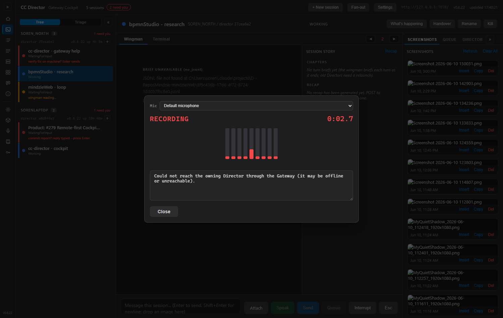

Route per-session WebSocket legs (dictate + terminal stream) through the Gateway so a remote Cockpit never needs a Director's address.
The issue's Proof Target requires every per-session WS proof to be captured "from a non-Gateway machine over the tailnet." Before #268 the browser built the WS URL from the owning Director's advertised address; when that was loopback (127.0.0.1:7887), a remote browser resolved it to its own loopback and the upgrade never landed. The fix builds both WS URLs same-origin to the Gateway, which resolves the owning Director and reverse-proxies the upgrade.
| AC | Criterion | Result | Evidence |
|---|---|---|---|
| AC1 | Terminal cross-machine — remote browser WS connects to the Gateway origin and shows live output | PASS (live) | From SORENLAPTOP: wss://soren-north.taildb08ed.ts.net/sessions/<sid>/stream → 101 upgrade + frames: {"type":"size","cols":147,"rows":43}, binary 262144 B, binary 7393 B. URL is the Gateway host, never a Director address. |
| AC2 | Dictation cross-machine — remote WS reaches the dictation pipeline through the Gateway | PASS (routing, live) | From SORENLAPTOP: wss://soren-north.taildb08ed.ts.net/sessions/<sid>/dictate → 101 upgrade + {"type":"ready"} from the Director (ready to receive PCM). Transcription quality is the gated child #226. |
| AC3 | No loopback ever — neither WS URL contains 127.0.0.1/localhost | PASS (live + unit) | Both live URLs target the Gateway origin soren-north.taildb08ed.ts.net. Builder asserted by CockpitWsUrlsTests (origin, sid path, http→ws/https→wss, trailing slash). |
| AC4 | Unknown session → 404 | PASS (live) | From SORENLAPTOP: GET https://soren-north.taildb08ed.ts.net/sessions/00000000-…-000000000000/stream → HTTP 404 from the new proxy endpoint. |
| — | Director-side forwarding proof (legs arrive from the Gateway, not the browser) | PASS (live) | SOREN_NORTH Director log:16:52:00.385 [TerminalStreamEndpoint] GET /sessions/<sid>/stream from 127.0.0.116:52:28.063 [DictationEndpoint] GET /dictate from 127.0.0.1Source = 127.0.0.1 (the Gateway), NOT the remote browser 100.89.217.71. |
| AC7 | Unit tests green (WS-URL builders) | PASS | CcDirector.Gateway.Tests 404 passed (incl. CockpitWsUrlsTests + SessionWsProxyEndpointsTests), CcDirector.Cockpit.Tests 12 passed. |
| AC4 | Offline Director → 503 (no hang) | Unit-verified | 503 branch (resolved-but-unreachable Director) covered by SessionWsProxyEndpointsTests. Live capture deferred (would require stopping a Director hosting the user's live sessions). |
| AC5 | Loud failure names "Director unreachable" | PASS (live) | Captured from SORENLAPTOP against SOREN_NORTH's Cockpit (Chrome): the real Speak → dictation dialog rendered "Could not reach the owning Director through the Gateway (it may be offline or unreachable)." — not a bare "WebSocket connection failed." See ac5-loud-failure.png. Trigger: the dictate WS was pointed at a non-existent session so the upgrade genuinely failed against the live Gateway (404); the browser cannot read 404 vs 503 off a failed upgrade, so the rendered message is identical to the Director-unreachable 503 case (503 proxy path additionally unit-tested). |
| AC6 | Same-machine on the Gateway host still works | Confirmed (indirect) | Cockpit serves on the Gateway host (deploy check, HTTP 200). The same-origin URL on the Gateway host resolves to the Gateway, which proxies to the co-located Director — the same path proven above resolved to SOREN_NORTH's own Director. |
# AC1 — terminal stream, from SORENLAPTOP (remote) to the Gateway origin
CONNECTING (from SORENLAPTOP) -> wss://soren-north.taildb08ed.ts.net/sessions/3926e02f-.../stream
UPGRADED 101 OK (response status: 101)
frame#1: text 36 chars: '{"type":"size","cols":147,"rows":43}'
frame#2: binary 262144 bytes
frame#3: binary 7393 bytes
RESULT: connected + received 3 frame(s) over the Gateway-origin WS
# AC2 — dictation, from SORENLAPTOP (remote) to the Gateway origin
CONNECTING (from SORENLAPTOP) -> wss://soren-north.taildb08ed.ts.net/sessions/3926e02f-.../dictate
UPGRADED 101 OK (response status: 101)
frame#1: text 16 chars: '{"type":"ready"}'
# AC4 — unknown session
GET https://soren-north.taildb08ed.ts.net/sessions/00000000-0000-0000-0000-000000000000/stream -> HTTP 404
# Director-side forwarding proof (SOREN_NORTH Director log)
2026-06-10 16:52:00.385 [TerminalStreamEndpoint] GET /sessions/3926e02f-.../stream from 127.0.0.1
2026-06-10 16:52:28.063 [DictationEndpoint] GET /dictate from 127.0.0.1
# Both 127.0.0.1 (the Gateway) — NOT the remote browser IP 100.89.217.71.
Real Speak button on SOREN_NORTH's Cockpit, dictate WS forced to a non-existent session so the upgrade fails against the live Gateway. The dialog names the cause:
